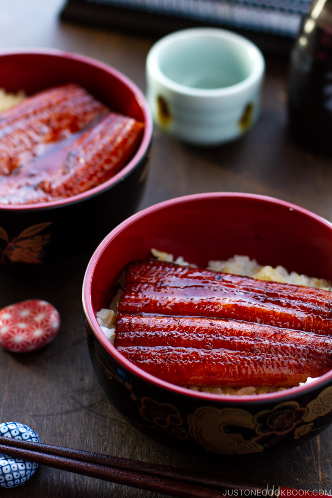

- Unadon is a dish orignating from Japan
- It consists of a bowl filled with steaming hot white rice topped with fillets of eel
- The unagi fillets are glazed in a sweet sauce and caramelized over a charcoal fire
- Unadon was the first donburi type dish of its kind
- It was invented by a man named Imasuke Okubo around 1804
